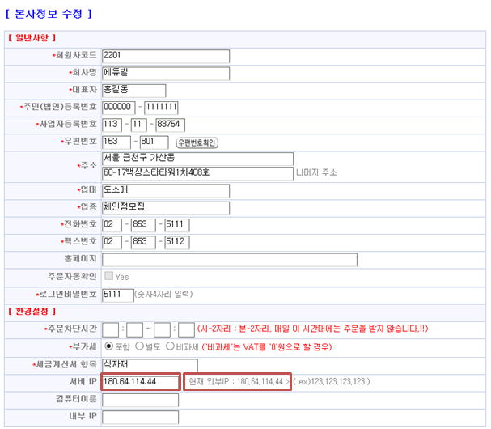

| B. 모든클라이언트PC가 접속이 안될경우 |
| 1. 메인PC가 켜져 있는지 확인한다(절전모드 일 경우에도 접속이 안된다.) |
| 2. 메인PC에서 바드미 로그인이 잘되는지 확인한다. |
| * 메인PC 는 되는데 클라이언트 PC접속이 안될 때 IP가 바뀌었을 경우가 많다. |
| * 메인PC – MSSQL Server 설치되어 있는 PC
- MSSQL 2005, MSSQL 2008, MSSQL 2012 등 |
| 3. 서버 IP 확인 |
| 3-1. 에듀빌(http://skmi.co.kr ) 로그인 |
| 3-2. 메뉴: 코드관리 > 본사정보수정 |
|  |
| 3-3. 현재 외부IP 주소를 복사하여 서버IP부분에 입력 후 수정버튼클릭 |
| 3-4. 공유기를 사용하고 있는 경우라면 공유기 설정을 확인한다. |
* 포트포워딩설정(공유기 설정)
포트포워딩이란?외부에 있는 컴퓨터가 내부에 있는 컴퓨터를 접근 할 때 공유기를 통해야 한다.
공유기는 방화벽과 같은 역할을 하므로 내부 컴퓨터에 접근 할 수 있도록 해당 포트를 열어주어야 한다. 즉 외부에서는 공유기에 물려있는 공인 IP만 알고 있다. 따라서 공유기의 설정을 통해 내부 PC에 접근을 할 수 있도록 해야 하는데 즉 이것을 포트포워딩이라 한다.
|
| ① 내PC의 IP와 공유기 관리페이지 접속 주소를 확인한다. |
| ① - ① 윈도우xp: 시작버튼클릭 -> 실행클릭 - > cmd 입력 후 엔터 |
| ① - ② 윈도우7: 시작버튼클릭 프로그램 및 파일검색 하는 부분에 cmd 입력 후 엔터 |
| ① - ③ cmd실행창에서 ipconfig입력후 엔터 |
| ① - ④ |
| ① - ⑤ 인터넷 익스플로러를 실행하여 공유기 관리자 페이지로 접속할 주소를 입력한 후 엔터클릭 |
 ① - ⑥ 관리도구 클릭 ① - ⑥ 관리도구 클릭 |
| ① - ⑦ 고급설정 -> NAT/라우터 관리-> 포트포워드설정 클릭 |
| ① - ⑧ 규칙이 하나도 없을 때는 위와 같이 입력하여 추가한다. |
| ① - ⑨ 규칙이 있을 때는 현재 접속된 PC의 IP주소와 내부Ip주소가 틀릴 경우 현재Ip주소로 설정 후 수정한다. |